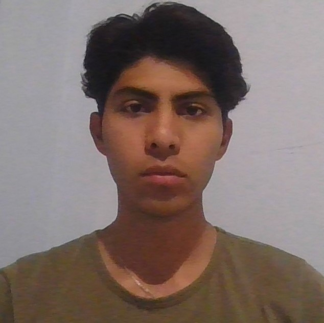

::::::::: Web Developer :::::::::
---- Leonardo OC ----

Short and long term objectives:
- Complete and learn the most with the Web Development Course.
-
Creation of my own frontend and backend projects and adding them to my
portfolio.
- Attend job interviews as a programmer.
-
Work in large software development companies and continue growing
professionally.
Summary 👦
I am currently a graduate of Computer Engineering, I consider myself a
disciplined and responsible person, I like to reinforce my knowledge by
learning from my mistakes, as well as accepting constructive criticism
from others.
Education 📚
Recent graduate of computer engineering degree 🎓 ✍
Work experience 💼
- Professional internships at Uach University:
- Performed maintenance of computer equipment, both software and hardware.
- A little network maintenance
- Configuration and implementation of a Service Desk in the university's Computer Center
- Freelancer (small static web pages):
- Consulting room
- Library
- Restaurant
Skills 💪
- Java programming
- Disciplined
- Responable
- Sociable
- Autodidact
- Patient
- Empathic
Achievements
- Complete the Computer Engineering degree
- Continue to have the motivation and discipline to continue learning and improving my skills.
- Having obtained an average at the university of 9.2
Other
::::::::::Contact Me :::::::::::::: Hobbies:::::::::::
Back to the start